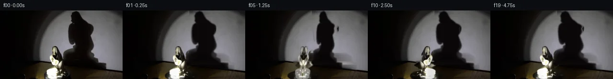

![首帧]()

Round 00
2026-11-05T01:16:32.652811+00:00像素候选变化代码 +264/−0inspection 更新
pixels 93930a5a1aa8ec85 · code 4f59cf29e02650e9
查看本轮 generate.py 真实 diff
--- previous/generate.py +++ current/generate.py @@ -0,0 +1,264 @@ +#!/usr/bin/env python3 +"""Generate the 20-frame locked-off porcelain turntable continuation.""" + +from pathlib import Path +import math + +import cv2 +import numpy as np +from PIL import Image, ImageDraw, ImageFont + +import artifact_io + + +ROOT = Path(__file__).resolve().parent +H, W = 144, 256 + + +def polygon_mask(points, blur=0.0): + mask = np.zeros((H, W), np.uint8) + cv2.fillPoly(mask, [np.asarray(points, np.int32)], 255) + result = mask.astype(np.float32) / 255.0 + if blur: + result = cv2.GaussianBlur(result, (0, 0), blur) + return np.clip(result, 0.0, 1.0) + + +def ellipse_mask(center, axes, blur=0.0): + mask = np.zeros((H, W), np.uint8) + cv2.ellipse(mask, center, axes, 0, 0, 360, 255, -1, cv2.LINE_AA) + result = mask.astype(np.float32) / 255.0 + if blur: + result = cv2.GaussianBlur(result, (0, 0), blur) + return np.clip(result, 0.0, 1.0) + + +def composite(base, overlay, alpha): + return base * (1.0 - alpha[..., None]) + overlay * alpha[..., None] + + +def remap_plane(plane, mx, my, interpolation=cv2.INTER_LINEAR): + return cv2.remap( + plane.astype(np.float32), mx.astype(np.float32), my.astype(np.float32), + interpolation, borderMode=cv2.BORDER_CONSTANT, borderValue=0, + ) + + +def build_clean_plate(source): + """Remove the original wall shadow and central assembly into a static plate.""" + yy, xx = np.mgrid[0:H, 0:W] + table_y = np.where(xx < 80, 120.0 - 0.1625 * xx, 107.0 + 0.1222 * (xx - 80)) + wall = yy < table_y + + # Broad area occupied by the soft wall shadow. Fill each scanline from + # unobstructed wall samples immediately to its left and right. A bowed + # interpolation follows the fixed spotlight rather than producing a flat fill. + shadow_region = polygon_mask([ + (139, 0), (190, 0), (198, 24), (191, 38), (201, 67), + (199, 82), (222, 95), (224, 108), (233, 110), (233, 128), + (146, 121), (132, 109), (136, 86), (143, 65), (139, 35), + ]) > 0.5 + shadow_region &= wall + + clean = source.copy().astype(np.float32) + for y in range(H): + xs = np.flatnonzero(shadow_region[y]) + if not len(xs): + continue + lo, hi = int(xs.min()), int(xs.max()) + left_x = max(65, lo - 9) + right_x = min(W - 1, hi + 9) + left = np.median(source[y, max(0, left_x - 3):left_x + 3], axis=0) + right = np.median(source[y, right_x - 2:min(W, right_x + 4)], axis=0) + for x in range(lo, hi + 1): + q = (x - lo + 1.0) / (hi - lo + 2.0) + # The unoccluded left half shows that the spotlight is brightest + # near x=155..175. Restore that gentle central bulge. + bulge = 25.0 * math.sin(math.pi * q) * max(0.0, 1.0 - y / 170.0) + clean[y, x] = left * (1.0 - q) + right * q + bulge + + # Hide interpolation seams beneath the naturally soft-edged spotlight. + seam = cv2.GaussianBlur(shadow_region.astype(np.float32), (0, 0), 2.0) + clean = composite(source.astype(np.float32), clean, seam) + + # Remove only the porcelain assembly. OpenCV inpainting is well suited here + # because the hole is small and straddles smooth wall/table regions. + object_hole = polygon_mask([ + (111, 72), (120, 73), (126, 84), (126, 94), (123, 99), … diff truncated; 177 more lines …